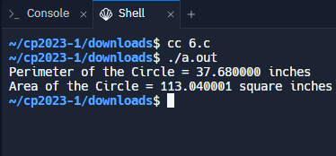

5. <<
Previous Next >> 7.
6.
在下面的練習中 -
- 程式包括標準輸入/輸出庫<stdio.h>。
- 它聲明了幾個變數：
- int radius：表示圓半徑。
- 浮動面積和浮動週長：將儲存計算出的圓的面積和周長。
- 在“main()”函數中：
- 它將值 6 分配給“radius”變量，表示圓的半徑。
- 然後程式計算圓的周長和麵積：
- 週長：它使用公式 2*3.14* 半徑來計算圓的周長，並將結果儲存在「週長」變數中。這裡，3.14 是數學常數 π (pi) 的近似值。
- 面積：使用公式 3.14*radius*radius (π * r^2) 計算面積，並將結果儲存於「area」變數中。
- 最後，程式使用“printf()”函數顯示計算值：
- 它會列印計算出的周長並顯示一條訊息：「圓的周長 = [週長] 英吋」。
- 它會列印計算出的面積並顯示一條訊息：圓的面積 = [面積] 平方英吋。

#include <stdio.h>
int main() {
// radius 是整數型別，用來儲存圓的半徑
int radius;
// area 和 perimeter 是浮點數型別，用來儲存計算後的圓的面積和周長。
float area, perimeter;
// 將半徑 radius 的值設置為 6。
radius = 6;
// 計算並儲存了圓的周長，使用圓周長的公式：2 * π * radius
// π 大約等於 3.14
// 使用 printf 函式印出圓的周長到終端上。
perimeter = 2 * 3.14 * radius;
printf("Perimeter of the Circle = %f inches\n", perimeter);
// 使用圓面積的公式：π * radius * radius。
// 同樣地使用了3.14作為圓周率的近似值。
area = 3.14 * radius * radius;
printf("Area of the Circle = %f square inches\n", area);
return(0);
}
5. <<
Previous Next >> 7.